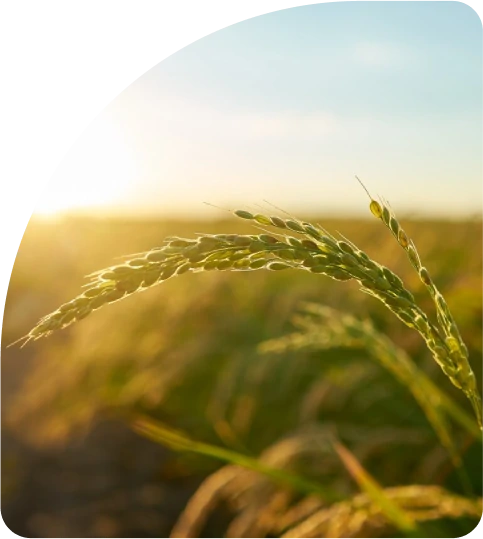

ElFahham Agricultural Crops
Company was established in
2012 by Mr. Hisham Mohamed
Hosni ElFahham. The roots of
this business go back to late
founding Mr. Saad Abu Bakr
ElFahham, started with a small
shop in 1972 and limited
himself to local work only.

1
1972
The successors of the late Saad Abu Bakr ElFahham began trading in agricultural crops and limited themselves to local work only.
2
1980
We have developed production capacity by purchasing the latest equipment currently.
3
1990
ElFahham Company expanded its portfolio, introducing more products to the Egyptian market.
4
2000
ElFahham opened a new headquarters for sorting, packing and exporting rice, and ElFahham provided premium rice to the Egyptian market.
5
2012
The brand was introduced under the name “ElFahham for Processing and Packing Agricultural Crops,” and Mr. Hisham Mohamed Hosni succeeded in building the company on his own, away from the family business.
6
2019
ElFahham Company significantly boosted production capacity with over 9 new international standard production lines, daily output of 500 tons, and expanded storage including refrigerated facilities.
7
2023
ElFahham Company is a major exporter and importer of various goods, having exported over 30,000 tons of sesame, beans, spices, and nuts, while also importing lentils, fava beans, and lupine to meet Egyptian market needs.
TIMELINE
Our challenges:
Our leadership strategy is to achieve complete customer satisfaction
by defining requirements that meet their objectives, deliver the
highest
possible performance, and ensure exceptional quality.
We do this in a unique and ingenious way.
Our mission:
We always strive for efficiency, flexibility,
and quality of service with the latest
international technologies, competitive
prices, and complete customer
satisfaction.
Exceeding goals, striving for excellence,
and profitable growth through market
analysis and prudent financial
management.

Our goal:
It is to become a global leader in the field
of importing, exporting, processing and
packaging agricultural commodities and to
be the first choice for customers looking
for quality, reliability and excellence. We
hope to achieve greater success in this
field
Our commitment:
- Quality: High-quality products meeting all standards.
- Customer Service: Excellent service and responsiveness.
- Reliability: Timely deliveries.
- Ethics: Ethical treatment of suppliers and customers.
- Safety: Strict adherence to safety and food security standards.
Our Team:
Our highest value is the person; Team is
the key to success. At work, we value
dedication, creative potential,
professionalism, strong will and a
collaborative atmosphere. Because they
are the key to our success.
Our production facilities are HALAL/USFDA and
ISO9001:2015
certified, ensuring production of first-class products.